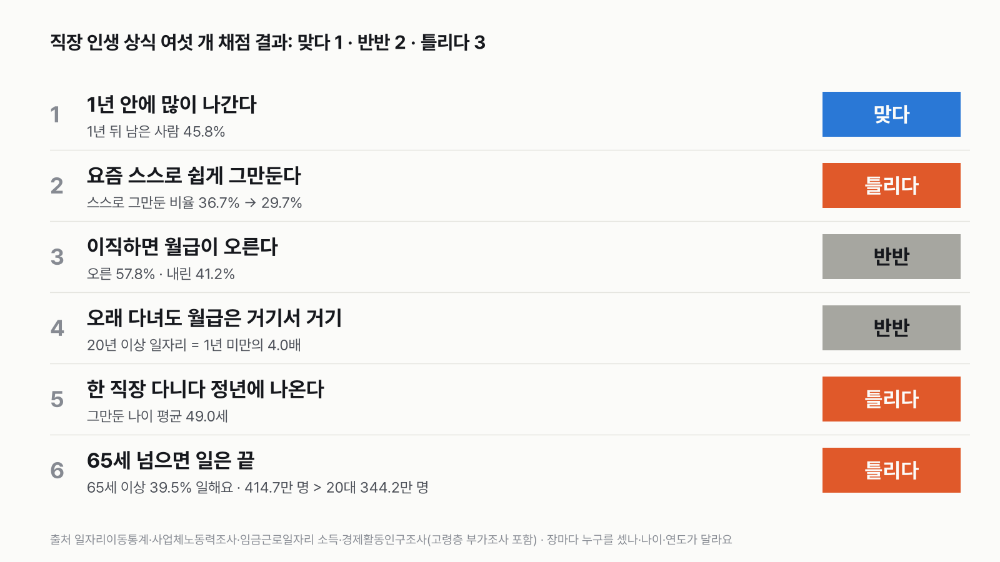
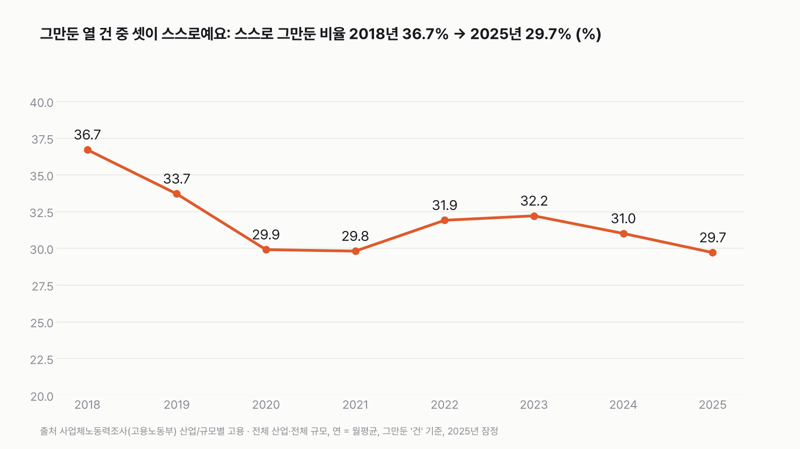
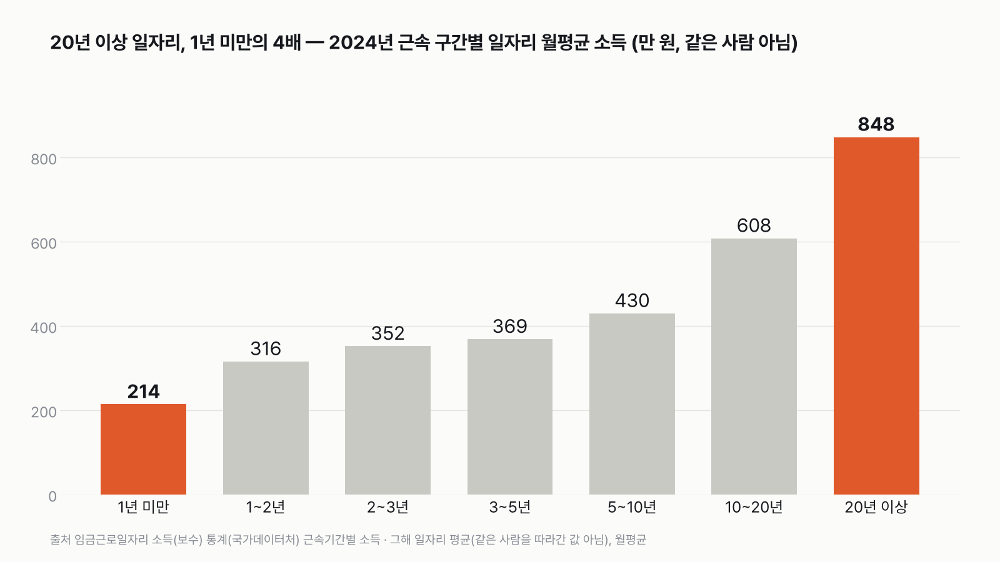
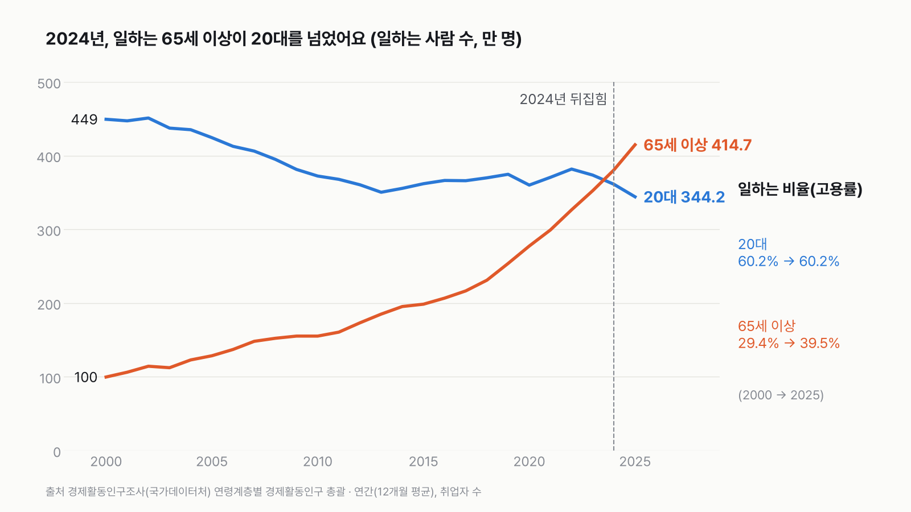

직장 인생 상식 여섯 개, 데이터로 채점하면?
첫 1년 안에 절반 넘게(54.2%) 다른 곳으로 가거나 일을 쉬고, 가장 오래 다닌 직장을 정년퇴직으로 끝낸 사람은 열에 하나도 안 돼요(9.0%). '한 회사에서 정년까지'는 드문 길이에요.

3줄 요약
- 흔히 믿는 직장 상식 여섯 개를 이미 쓴 글 일곱 편의 숫자로 채점했어요. 맞다 1개, 반반 2개, 틀리다 3개예요.
- 맞는 건 "들어가면 1년 안에 많이 나간다" 하나예요. 1년 뒤 같은 회사에 남은 사람은 45.8%예요.
- "요즘 다들 스스로 그만둔다", "정년까지 다닌다", "65세 넘으면 일은 끝"은 숫자와 맞지 않았어요. 65세 이상 열에 넷(39.5%)이 일해요.
채점표
장마다 다른 조사라, 누구를 셌는지 같이 적었어요.
| 상식 | 판정 | 대표 숫자 | 누구를 셌나 | 나이 | 연도 | 원 글 |
|---|---|---|---|---|---|---|
| 1. 들어가면 1년 안에 많이 나간다 | 맞다 | 들어간 지 1년 안 된 사람 중 1년 뒤 같은 회사에 남은 사람 45.8% | 사람 | 모든 나이 | 2023→2024 | 1년 뒤 절반도 안 남아요 |
| 2. 요즘은 다들 스스로 쉽게 그만둔다 | 틀리다 | 그만둔 건 중 스스로 그만둔 비율 36.7% → 29.7% | 건(그만둔 일자리) | 나이 구분 없음 | 2018→2025(잠정) | 스스로 그만두는 사람, 늘었을까요? |
| 3. 이직하면 월급이 오른다 | 반반 | 옮긴 월급 받는 사람 중 오른 57.8%, 내린 41.2% | 사람 | 모든 나이 | 2024 | 이직하면 월급이 오를까요? |
| 4. 오래 다녀 봤자 월급은 거기서 거기 | 반반 | 근속 20년 이상 일자리 848만 원 = 1년 미만(214만 원)의 4.0배 | 일자리(그해 근속 구간별 평균) | 모든 나이 | 2024 | 20년 다닌 일자리 월소득 |
| 5. 한 직장 다니다 정년에 나온다 | 틀리다 | 가장 오래 다닌 직장을 그만둔 나이 평균 49.0세, 정년퇴직 9.0% | 사람(이미 그만둔 사람만) | 55~64세 | 2026 | 가장 오래 다닌 직장, 몇 살에 그만뒀을까요 |
| 6. 65세 넘으면 일은 끝 | 틀리다 | 65세 이상 중 일하는 비율 39.5%, 일하는 65세 이상 414.7만 명 > 일하는 20대 344.2만 명 | 사람 | 65세 이상 vs 20대 | 2025 | 일하는 65세 이상이 20대보다 많아졌어요 |
1장. 들어가면 1년 안에 많이 나간다 — 맞다
들어간 지 1년이 안 된 회사에 1년 뒤에도 남아 있는 사람은 45.8%예요(2023→2024). 29.4%는 다른 일자리로 옮겼고, 24.8%는 다음 해엔 회사 일자리 기록이 없었어요(쉬거나, 자영업 등). 둘을 합치면 54.2%예요.
오래 다닐수록 남는 사람이 많아요. 다닌 지 10년이 넘으면 93.3%가 그대로 있어요. 2017년부터 2024년까지 1년 안 된 사람의 남는 비율은 41.9~45.8% 사이였어요. 옮기는 일은 대부분 들어간 지 얼마 안 됐을 때 일어난다는 말은 숫자와 맞아요.
2장. 요즘은 다들 스스로 쉽게 그만둔다 — 틀리다
'다들'은 아니에요. 그만둔 열 건 중 셋이 스스로예요. 그만둔 건 가운데 스스로 그만둔 비율은 2018년 36.7%에서 2025년 29.7%(잠정)로 내려왔어요. 2023년 32.2%까지 올랐다가 다시 내려간 흐름이에요.
2025년엔 한 달 평균 91.2만 건의 이직이 있었어요. 스스로 그만둔 건 27.1만, 계약 종료·해고 등은 55.3만으로 두 배가 넘어요. 여기서 '스스로'는 개인 사정으로 그만둔 경우예요. 더 좋은 곳으로 옮긴 건지는 이 표로 나눌 수 없어요.
2026년 1~9월(잠정)엔 스스로 그만둔 건수가 다시 늘었어요. 그래도 이 장은 미리 정한 대로 2018년과 2025년을 견줘 채점해서 판정은 '틀리다' 그대로예요. 나이 구분이 없는 숫자라 '요즘 젊은 사람' 이야기로 읽으면 안 돼요.

3장. 이직하면 월급이 오른다 — 반반
2024년에 직장을 옮긴 월급 받는 사람 214만 5천 명 가운데 57.8%는 월급이 올랐고, 41.2%는 내렸어요. 오른 사람이 더 많지만, 다섯 중 둘은 내렸어요. 오른 비율 57.8%는 2017년 이후 8년 중 가장 낮아요.
이 숫자는 오른 '폭'이 아니라 오르고 내린 '방향'만 센 거예요. 그래서 이직자의 57.8%가 올랐다는 것만으로 "이직이 유리하다"고 말할 수 없어요. 옮기지 않은 사람의 월급이 얼마나 올랐는지와 견준 숫자가 아니거든요.
4장. 오래 다녀 봤자 월급은 거기서 거기 — 반반
2024년 근속 20년 이상 일자리의 월평균 소득은 848만 원, 1년 미만은 214만 원이에요. 4.0배 차이예요. 숫자만 보면 "거기서 거기"와는 거리가 멀어요.
그런데 이건 같은 사람을 따라간 것이 아니에요. "오래 다니면 이만큼 오른다"는 뜻은 아니고, "그해 근속 구간별 일자리 평균"이에요. 근속이 길수록 다른 조건도 달라요. 나이가 많고, 대기업·공공기관 비중이 높을 수 있어서 근속 자체의 효과를 가를 수 없어요. 그래서 한 사람이 20년 다니면 4.0배가 된다고 말할 수 없어 반반으로 매겼어요.

5장. 한 직장 다니다 정년에 나온다 — 틀리다
55~64세가 가장 오래 다닌 직장을 그만둔 나이는 평균 49.0세예요(2026년). 정년퇴직으로 그만둔 사람은 9.0%로, 열에 하나가 안 돼요. 가장 많은 이유는 사업 부진·휴업·폐업(28.4%)이고, 건강(18.3%)과 가족 돌봄(16.7%)이 뒤를 이어요.
다만 49.0세는 지금도 다니는 사람이 빠진 평균이에요. 오래 다니는 사람이 늘면 '그만둔 사람'의 평균 나이는 실제보다 낮게 보일 수 있어요. 그래도 이미 그만둔 사람 가운데 정년퇴직이 9.0%라는 점은 "정년에 나온다"는 그림과 맞지 않아요.
6장. 65세 넘으면 일은 끝 — 틀리다
65세 이상 열에 넷(39.5%)이 일해요(2025년). 2000년엔 29.4%였어요.
사람 수로는 자리가 뒤집혔어요. 2025년 일하는 65세 이상은 414.7만 명으로, 일하는 20대(344.2만 명)보다 많아요. 처음 뒤집힌 건 2024년이에요. 20대 중 일하는 비율은 2000년에도 2025년에도 60.2%로 같아요.
20대 인구는 747만 → 571만 명으로 줄고, 65세 이상은 339만 → 1,051만 명으로 늘면서 일하는 비율도 29.4% → 39.5%로 올라 자리가 바뀌었어요. 원인은 이 자료로 알 수 없어요.
더 일하고 싶다는 55~79세는 평균 73.6세까지 일하고 싶다고 답했어요(2026년).

점수판을 다시 보면
맞다 1개, 반반 2개, 틀리다 3개예요. 틀린 셋은 "그만두는 사람", "그만두는 나이", "일하는 나이"에 관한 말이에요. 셋 다 우리가 떠올리는 그림보다 직장 인생이 일찍 흔들리고, 늦게까지 이어진다는 쪽이었어요.
반반 둘은 둘 다 '월급'이에요. 숫자가 있긴 하지만, 같은 사람을 따라가거나 안 옮긴 사람과 견준 숫자가 아니라서 한쪽으로 단정할 수 없었어요. 내 경험과 다르다면, 내가 어느 것(사람·건·일자리)의 평균과 견주고 있는지부터 보면 돼요.
이 숫자는 어디서 왔나요
출처
기준일 장마다 달라요. 1장 2023→2024년, 2장 2018~2025년(2025년 잠정), 3·4장 2024년, 5장 2026년 5월 조사, 6장 2025년(연간)이에요.
국가데이터처일자리이동통계
- 연령별·근속기간별 일자리 이동KOSIS DT_1JTJ_A009원본 보기
1장
고용노동부사업체노동력조사
- 산업/규모별 고용KOSIS DT_118N_MON056원본 보기
2장
국가데이터처일자리이동통계
- 임금근로자의 연령별·임금수준간 일자리 이동KOSIS DT_1JTJ_B010원본 보기
3장
국가데이터처임금근로일자리 소득(보수) 통계
- 근속기간별 소득KOSIS DT_1EP_2007원본 보기
4장
국가데이터처경제활동인구조사 고령층 부가조사
- 가장 오래 근무한 일자리를 그만둔 연령·이유KOSIS DT_1DE8036S원본 보기
5장
국가데이터처경제활동인구조사
- 연령계층별 경제활동인구 총괄KOSIS DT_1DA7002S원본 보기
6장
국가데이터처경제활동인구조사 고령층 부가조사
- 연령별 평균근로희망연령KOSIS DT_1DE8057S원본 보기
6장 끝 한 줄
새 자료는 받지 않았어요. 숫자는 모두 원 글 일곱 편과 같은 값이고, 원 글의 정리 파일에서 다시 계산해 맞춰 봤어요.
어떻게 셌나요
- 여섯 장은 여섯 개의 다른 조사예요. 한 사람의 직장 인생을 따라간 숫자가 아니에요.
- 누구를 셌는지가 장마다 달라요. 1·3·5·6장은 사람, 2장은 그만둔 건(한 사람이 두 번 그만두면 두 번 세요), 4장은 일자리(그해 근속 구간별 일자리의 평균)예요.
- 나이와 연도도 달라요. 5장은 55~64세 가운데 이미 그만둔 사람만, 6장은 2025년의 65세 이상과 20대예요.
- 판정은 셋 중 하나예요. 숫자가 상식과 같은 쪽이면 맞다, 반대쪽이면 틀리다, 한쪽으로 말하기 어렵거나 숫자가 상식을 그대로 받쳐 주지 못하면 반반이에요.
한계 7가지
이 데이터로 말할 수 없는 것
- 여섯 장은 여섯 개의 다른 조사예요. 같은 사람을 따라간 숫자가 아니라서, 장마다 누구를 셌는지 같이 봐야 해요. 장끼리 숫자를 더하거나 이어 붙이지 않았어요.
- 판정은 이 글을 쓰기 전에 정한 기준을 따른 거예요. '반반'은 숫자가 없어서가 아니라, 숫자가 상식을 그대로 받쳐 주지 못해서예요.
- 2장 2025년 값은 잠정치예요. 2026년 잠정치에서는 스스로 그만둔 건수가 다시 늘었어요. 다음 해 확정치에 따라 달라질 수 있어요.
- 2장은 나이 구분이 없는 숫자라 '요즘 젊은 사람' 이야기로 읽으면 안 돼요.
- 5장 평균 49.0세는 이미 그만둔 사람만의 평균이라 선택 효과가 있어요. 지금도 다니는 사람이 빠져서 평균 나이가 낮게 보일 수 있어요.
- 4장은 일자리 평균이라 나이, 회사 크기, 공공기관 비중 차이가 함께 들어 있어요.
- 어느 장도 원인을 가리지 않아요. 숫자는 '이랬다'까지만 말해요.
새 글 나오면 받아 보기
피드 리더 앱에 이 사이트 주소를 한 번 넣어 두면, 새 글이 올라올 때 앱에 떠요. 가입이나 메일 주소는 필요 없어요.
받는 법 보기
- 피드 리더 앱을 하나 골라요. 새 글을 모아 보여 주는 앱이에요. 예를 들면 Feedly나 Inoreader가 있어요. 둘 다 무료고 웹·휴대폰에서 써요.
- 앱에서 '구독 추가'(+)를 누르고 아래 주소를 붙여 넣어요.
- 끝이에요. 새 글이 올라오면 앱 목록에 떠요.
https://protofu.github.io/opendata-insight/feed.xmlFeedly를 쓴다면 여기를 눌러 바로 추가할 수도 있어요.